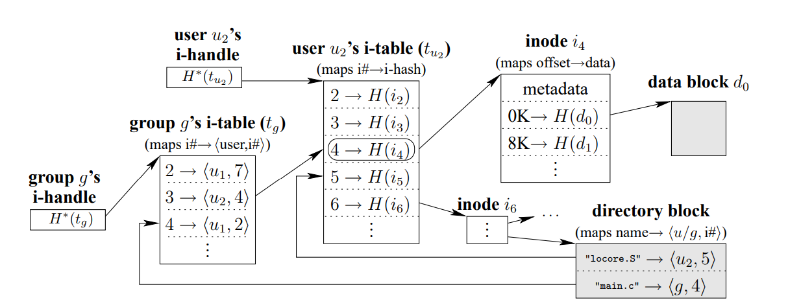

SUNDR
Overview
- SUNDR (Secure Untrusted Data Repository) is a network file system (NFS) designed to store data securely on untrusted servers
- Allows clients to detect any attempts at unauthorized file modification by malicious server operators or users
- Achieves fork consistency:
- Guarantees clients can detect any integrity or consistency failures as long as they see each other's file modifications
- We want to be able to protect against the case where server is fully controlled by malicious adversary
- It will intentionally try to trick users and not follow any rules / protocol
- We assume the server cannot break cryptography
- We want:
- Confidentiality: adversary can't read file contents
- Integrity: adversary can't trick clients into getting wrong file contents
- Availability: adversary can't prevent clients from accessing their files
- Need integrity:
- Prevent all illegitimate modifications
- Ensure legitimate modifications all appear in the right order
Design Motivation
- Naive design: use existing NFS and each file contains signature made from the data itself and the writer
- When user reads a file, the client checks the signature which will fail if the data isn't exactly the same
- With this, the malicious server could just send a different file instead of the data we requested
- Possible solution: include filename in signature
- But then we could send old contents of files
- Even worse, intersperse new content for some files, old for others
- Can claim a file doesn't exist
- We need more sophisticated design to ensure we have:
- Consistent, latest versions
- Integrity of directory contents: should not be missing any files
- Permissions
- Big idea in SUNDR:
- Every update to any file includes a signature that encapsulates the entire current state visible to that updating user
- This way a signature will include reference to other updates so we will know if we have been served content of different versions
- We go through three designs, the last of which is SUNDR
Strawman Design
- Very inefficient design but shows the general idea
- We first serialize all operations via a global lock
- File system state is determined by log of operations by users, which server has to store
- Each log entry contains whether it is fetch vs modify, user who made the entry, and the signature
- Signature covers the entire log up to that point
- Clients download the entire log and makes sure correct signatures in every entry
- Then it constructs the filesystem state
- Then it makes its new log entry, signs it, and then uploads the log
- For an adversary to sign a fake log entry, it would have to know the private key of an authorized user
- This is used to actually generate the signatures
- The file system itself stores the public keys of other root file / directory owners
- We must log fetch entries because otherwise we could have stale views across different files:
- The server could give us different log prefixes when we look at different files and we would have no clue
- We need to have our fetches in our log to make sure the server doesn't do something sneaky like this
- This way we can make sure that our previous fetches were in the log
Forks
- Let's say server C made a fetch operation
- The server could potentially hide modifications from user A and user B from a user C by just sending a prefix of the log
- But then C can never see any subsequent operations from user A or user B again since their signatures won't include C's fetch
- The server can continue serving C's requests, but to do so, it must serve them on a separate fork from A and B since it has to hide all of those operations from C
- It must also hide C's operations from A and B
- This leads to fork consistency: we can fork clients, but once it forks, the server can never show operations from one fork to clients in the other fork
- This is pretty nice for a file system since it is very obvious if you have a fork if users have external communication
- We can automate fork detection with a separate trusted timestamp box
- A designated user is responsible for updating some file every 5 seconds
- If client sees these updates, it's in the same fork as the timestamp box
- If not, then we have forked!
Refined Design
- Problem: Strawman is not practical since the log grows too long and interpreting it also takes too long
- We'll fix the global lock problem later
- We want to instead sign file system snapshots
- Block store stores mapping from the hash of blocks to the actual block data
- This makes it easier to verify data when we request data with a specific hash
- Every file is identified by a <principal, i-number> pair
- principal is the user or group allowed to write the file
- i-number is per-principal inode number
- Each principal has a i-table map
- User i-table maps from i-number to the hash of the corresponding inode (allowing us to retrieve from block store)
- Group i-table maps a group i-number onto a <user, user i-number> pair
- Stored as a B+-tree where elements in the tree store hashes of their children
- The hash of the B+-tree root is the i-handle
- Each inode contains a list of hash of file data blocks and indirect blocks so they can be retrieved

- Blocks are immutable and since they are keyed by their hash, as long as the client knows the key that they want, they can check that the block hashes to that key
- We update by:
- When client C writes a file, it constructs a new tree reflecting its modification
- New tree mostly shares the same blocks as the old tree
- Only needs to change to new blocks on path from root of tree to modified content
- This means that each modification leads to a new i-handle
- A malicious server could give out old i-handles, concealing recent updates
- We want each new i-handle to encode what came before it (both fetches and modifications)
- Idea: signed version structure (VS) for each user that is stored in the server
- Contains:
- i-handle after user's last opeartion
- Version vector (for each user, how many operations that user has performed)
- Public key signature by user
- This allows clients to detect old operations and attempts by the server to hide modifications (merge forks)
- With this, to execute an operation:
- Get all user's VSs from server
- Validate
- Check that the version vector can be totally ordered (<= operation in all indices)
- Modify the i-tables and i-handle accordingly
- Change the i-handle of the VS and increment the version number
Concurrent SUNDR
- The previous version required us to wait for all previous clients to finish so that it could read their proper version numbers
- Ideally, we want the only time a client should have to wait for another is when it is reading a file the other is writing
- Concurrent SUNDR can do this